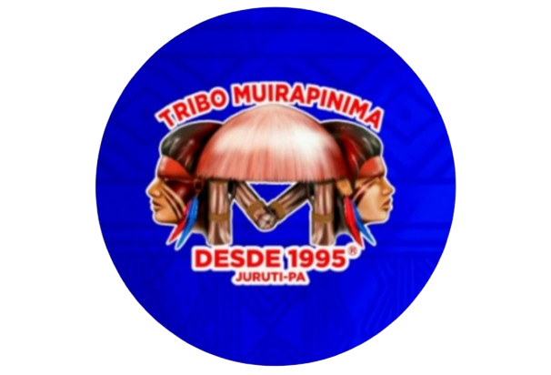
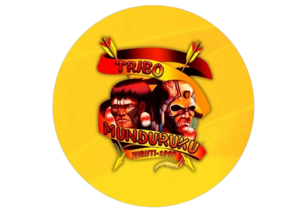

repare-se para uma experiência única e rica em cultura! O Festival das Tribos
Indígenas de Juruti, também conhecido como Festribal, é um evento grandioso que
celebra a tradição indígena da r egião do oeste do Pará. Realizado anualmente no
último fim de semana de julho ou início de agosto, o festival é uma verdadeira imersão
na cultura amazônica, reunindo diversas tribos indígenas em um grande espetáculo.
tribos Muirapinima (vermelho e azul) e Munduruku (vermelho e amarelo), que
competem em uma disputa vibrante pela conquista do título. A festa é um verdadeiro
banquete cultural, com música, dança, artes cênicas e alegorias que retratam a rica
história e o modo de vida indígena.
O Festribal é uma herança do Festival Folclórico de Juruti, que inspirava a criatividade
das apresentações. As tribos se apresentam com grupos de até 800 integrantes,
mostrando o talento e a tradição através de cordões de pássaros, quadrilhas, bumba-meu-boi e carimbó.
A competição é avaliada por uma comissão externa, formada por profissionais de
outras regiões do país, que julgam a evolução, o apresentador, o pajé, a letra,
a música e outros aspectos da apresentação.
Juruti te espera para um mergulho no coração da cultura indígena amazônica! Prepare-se
para ser envolvido por uma explosão de cores, sons e ritmos em um festival que celebra a
tradição e a diversidade cultural do Brasil.
Festival das Tribos Indigenas de Juruti

Tribo Muirapinima
@tribomuirapinima
